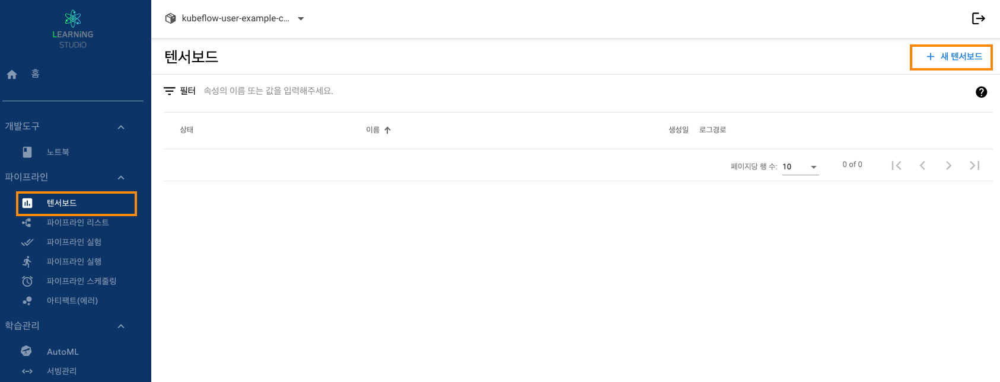
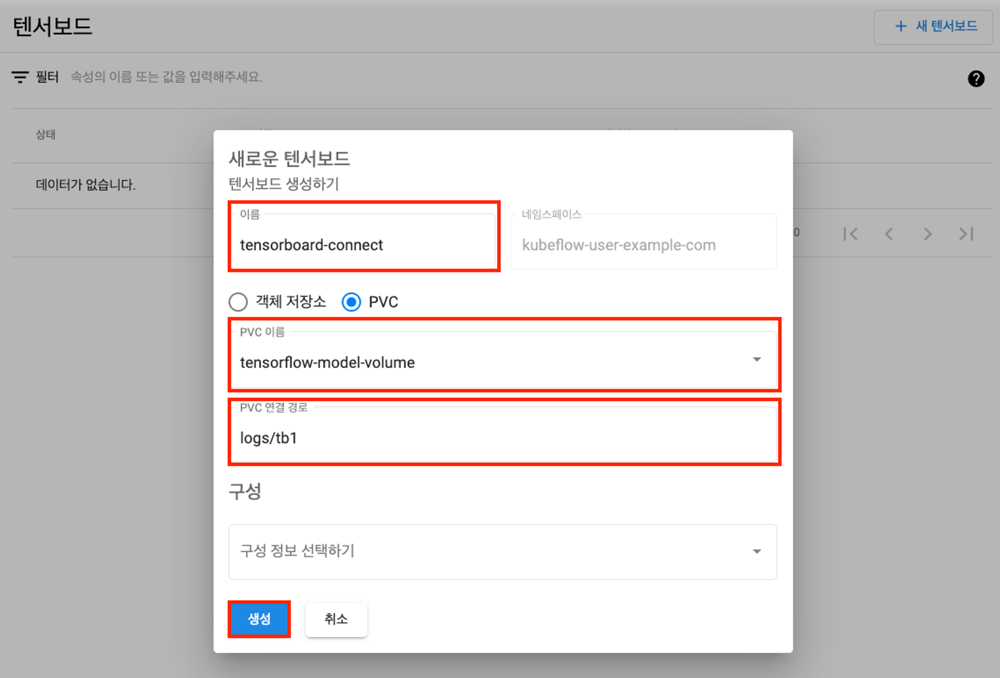
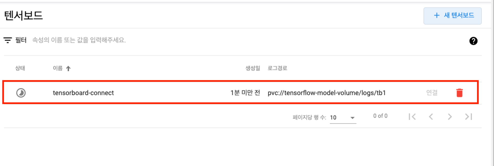
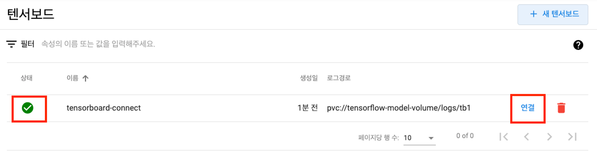
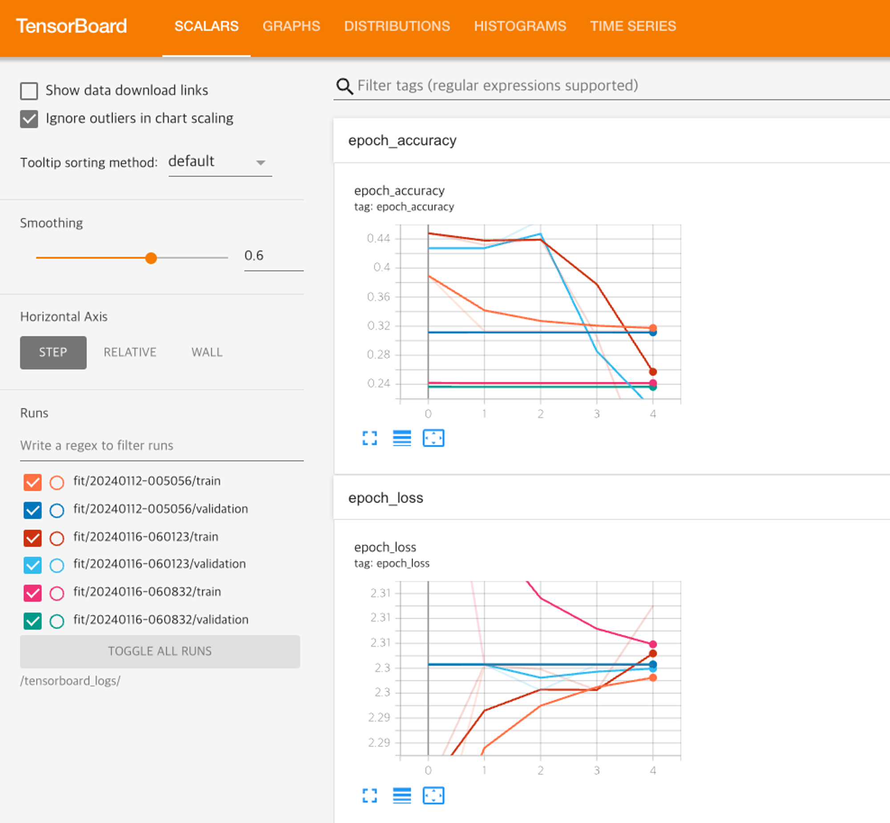
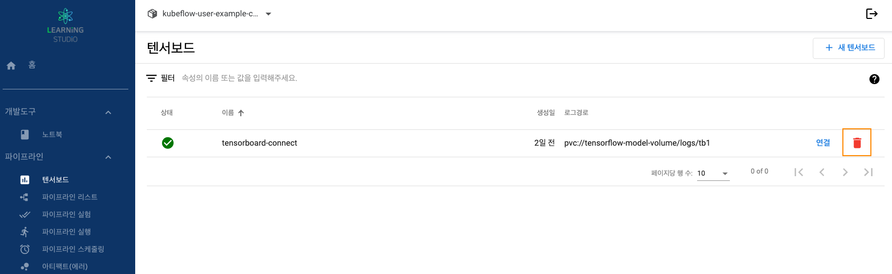

Step 1. 텐서보드 만들기
1. 러닝스튜디오 대시보드 접속합니다.
2. 좌측에 메뉴에서 파이프라인 → 텐서보드 탭을 선택입니다.
3. 우측 상단에 위치한 “새 텐서보드 클릭

4.텐서보드 설정
1) 텐서보드 이름, PVC, PVC 연결 경로
- 이름 : 원하는 이름 지정(네임 규칙 : 소문자 영문으로 시작)
- PVC : 모델이 저장된 PVC이름
- PVC연결 경로 : PVC 실제 경로

5.텐서보드 연결


6.텐서보드 시각화 보기

Step 2. 텐서보드 삭제
1. 러닝스튜디오 대시보드 접속합니다.
2. 좌측에 메뉴에서 파이프라인 → 텐서보드 탭을 선택입니다.
- 삭제할 텐서보드 리스트에서 "휴지통" 아이콘 클릭
